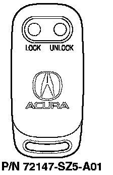

1998 2.5TL/1996-98 3.2TL
1998 2.5TL with factory-installed security system1996-98 3.2TL with factory-installed security system

Programming the Transmitter
NOTES:
^ This system accepts up to two transmitters.
^ Entering the programming mode cancels all learned transmitter codes, so none of the previously programmed transmitters will work. You must reprogram all the transmitters once you're in the programming mode.
1. Open the driver's door.
2. Push up the driver's door master power door lock to the unlock position. Hold it there for the rest of this procedure.
3. Insert the key in the ignition switch, then remove it. Repeat this four more times within 10 seconds. (Steps 3 and 4 must be completed within 10 seconds, or the system will exit the programming mode.)
4. Insert the key in the ignition switch. Make sure the power door locks cycle to indicate that the system has entered programming mode.
5. Press the "LOCK" or "UNLOCK" button on the transmitter. Make sure the power door locks (all except the driver's door) cycle to indicate that the transmitter has been accepted.
6. To program a second transmitter, press its "LOCK" or "UNLOCK" button within 10 seconds.
7. Release the master power door lock switch to exit the programming mode.
Ordering a Transmitter
Transmitters can be ordered only by authorized Acura dealers. Order them from American Honda using normal parts ordering procedures.
Batteries for the Transmitter
The battery number is CR2016. Each transmitter uses two batteries.